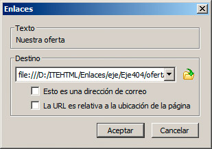
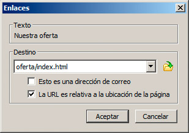

Lo veremos a través de un ejemplo. La figura muestra una estructura clásica de un sitio web. Para que el mantenimiento de la web sea sencillo, hemos optado por mantener varias páginas en el punto inicial del sitio (lo denominaremos carpeta raíz) mientras que otros contenidos se han distribuido en carpetas. Así hemos creado dos carpetas que contendrán páginas web, y posiblemente algunos recursos más, y una tercera en la que almacenaremos las diferentes imágenes del portal.

Llegados a este punto, necesitaremos realizar varios enlaces desde la página principal (la llamada index.html) hacia las otras páginas del sitio. Y aquí es donde viene la principal diferencia entre crear enlaces a otros sitios web o dentro de un mismo sitio web.
Nota
Para poder enlazar dos páginas, es necesario que éstas existan, por lo que, si estamos empleando un editor web, debemos guardarlas previamente.
Referencias relativas y absolutas
Al enlazar a otros sitios web, hemos insistido mucho en que es necesario indicar la URL completa, es decir, la dirección entera comenzando por su http://, con el nombre del sitio web a continuación, y con todas las carpetas y subcarpetas que nos permitiesen identificar la página de forma inequívoca. Con ello conseguimos lo que se conoce como una referencia absoluta, porque al ser las URL únicas en todo Internet, no hay posibilidad de ambigüedades. Si la URL está completa, sabemos que apunta a una página específica entre los miles de millones de páginas de Internet.
Por el contrario, este celo en las direcciones no debemos aplicarlo al hacer un enlace entre las páginas web de un sitio web; más bien al contrario. En este caso nos interesa generar referencias relativas, es decir, que los enlaces tomarán sentido dependiendo de su posición en las carpetas. Por ejemplo, si desde la página index.html del ejemplo anterior quiero enlazar con la página presentación.html que se encuentra en la misma carpeta, podría hacerlo con el método absoluto:
<a href=”http://www.misitioweb.com/presentacion.html”>Accede a la presentación</a>
o mediante un sencillo enlace relativo:
<a href=”presentacion.html”>Accede a la presentación</a>
El segundo método es el correcto. Dado que las dos páginas están en la misma carpeta, sólo necesito indicar su nombre.
Hay dos motivos clave por los que debemos actuar así en los enlaces entre páginas de un mismo portal:
a) Si utilizamos la URL absoluta, nos obligamos a indicar de antemano la dirección completa del sitio web; algo que quizás no tengamos mientras estamos preparando las páginas y que además nos obligaría a colocar las páginas en Internet para poder probarlas.
b) Si en un momento determinado el sitio web cambia de dominio o lo trasladamos a otra parte, todos los enlaces dejarían de funcionar, al hacer referencia al sitio antiguo. Por el contrario, si mantenemos los enlaces como relativos, todo el sitio funcionará sin problema se coloque donde se coloque.
Veamos un par de ejemplos más para entender mejor la situación:
Si, por ejemplo, quisiéramos acceder desde la página index.html a otra página denominada index.html también, pero que se encuentra dentro de la carpeta oferta, lo hariamos de esta manera:
<a href=”oferta/index.html”>Nuestra oferta formativa</a>
La "/" nos sirve para referirnos a las subcarpetas que nacen desde la carpeta raíz del sitio web.
¿Y para acceder desde la página index.html de la carpeta oferta a una página de la carpeta raiz del sitio? Para acceder a una carpeta anterior, se emplea una referencia heredada de los sistemas operativos que nos dice que la secuencia ".." nos llevará a la carpeta previa. Por ejemplo, en la página index.html de la carpeta oferta podría indicar lo siguiente:
<a href=”../presentacion.html”>Consultar la presentación del sitio web</a>
En resumen, las tres técnicas para direccionar un enlace son:
- Si las páginas están en la misma carpeta: indicamos el nombre de los archivos nada más.
- Si está en una o varias subcarpetas: indicamos las subcarpetas con una / como separador (por ejemplo, documentos/2014/proyecto.html).
- Si está en una o varias carpetas anteriores a la actual: utilizamos .. para retroceder en la estructura (por ejemplo ../../propuestas.html nos llevaría a un archivo situado en dos carpetas antes).
- También podemos mezclar .. y / para obtener toda la versatilidad necesaria. Por ejemplo (../2013/proyectos).
Enlaces relativos en un editor web
El concepto de enlaces relativos y absolutos se observa claramente en un editor web como BlueGriffon. En la figura estamos creando un enlace desde la página principal a otra contenida en la carpeta oferta. La dirección que se aprecia en un primer momento es la absoluta:

Como se puede observar, la URL que se genera no comienza por http:// para indicar que es una página web ubicada en Internet, sino por file:// lo que nos indica que es un archivo situado en un equipo local, que es el ordenador en el que estamos haciendo las pruebas.
Esa dirección funcionará correctamente en nuestro ordenador; pero si yo pruebo en otro sitio o lo muevo del disco en el que está a otro diferente, dejará de funcionar. Y por supuesto, cuando lleve todo el sitio a Internet, fallarán todos los enlaces.
Por ese motivo, activaremos siempre en estos casos la casilla La URL es relativa a la ubicación de la página. Como se puede apreciar en la figura, la dirección cambia totalmente, dejando sólo la información necesaria para que el enlace funcione en cualquier lugar.

Nota
Pregunta de Elección Múltiple
|
_parent y _top.
| |
|
_self.
| |
|
_blank.
|